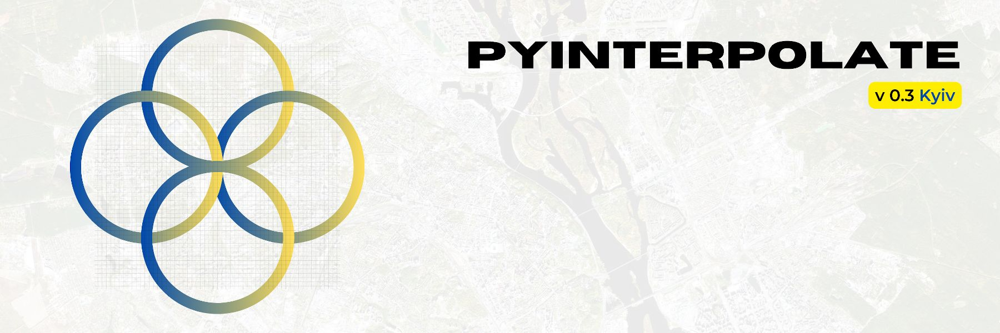

Pyinterpolate#
version 0.3.0 - Kyiv#
Note
The last documentation update: 2022-09-13
Pyinterpolate is the Python library for geostatistics. The package provides access to spatial statistics tools used in various studies. This package helps you interpolate spatial data with the Kriging technique.
If you’re:
GIS expert,
geologist,
mining engineer,
ecologist,
public health specialist,
data scientist.
Then this package may be useful for you. You could use it for:
spatial interpolation and spatial prediction,
alone or with machine learning libraries,
for point observations and aggregated data.
Pyinterpolate allows you to perform:
Ordinary Kriging and Simple Kriging (spatial interpolation from points),
Centroid-based Poisson Kriging of polygons (spatial interpolation from blocks and areas),
Area-to-area and Area-to-point Poisson Kriging of Polygons (spatial interpolation and data deconvolution from areas to points).
Inverse Distance Weighting.
Semivariogram regularization and deconvolution.
Semivariogram modeling and analysis.
Contents#
How it works#
The package has multiple spatial interpolation functions. The flow of analysis is usually the same for each method:
[1.] Read and prepare data.
from pyinterpolate import read_txt
point_data = read_txt('dem.txt')
[2.] Analyze data, calculate the experimental variogram.
from pyinterpolate import build_experimental_variogram
search_radius = 500
max_range = 40000
experimental_semivariogram = build_experimental_variogram(input_array=point_data,
step_size=search_radius,
max_range=max_range)
[3.] Data transformation, fit theoretical variogram.
from pyinterpolate import build_theoretical_variogram
semivar = build_theoretical_variogram(experimental_variogram=experimental_semivariogram,
model_type='spherical',
sill=400,
rang=20000,
nugget=0)
[4.] Interpolation.
from pyinterpolate import kriging
unknown_point = (20000, 65000)
prediction = kriging(observations=point_data,
theoretical_model=semivar,
points=[unknown_point],
how='ok',
no_neighbors=32)
[5.] Error and uncertainty analysis.
print(prediction) # [predicted, variance error, lon, lat]
>> [211.23, 0.89, 20000, 60000]
With pyinterpolate, we can retrieve the point support model from blocks. Example from the Tick-borne Disease Detector study for European Space Agency - COVID-19 population at risk mapping. We did it with the Area-to-Point Poisson Kriging technique from the package. Countries worldwide aggregate disease data to protect the privacy of infected people. But this kind of representation introduces bias to the decision-making process. To overcome this bias, you may use Poisson Kriging. Block aggregates of COVID-19 infection rate are transformed into new point support semivariogram created from population density blocks. We get the population at risk map:

Status#
Beta (late) version: the structure will be in most cases stable, new releases will introduce new classes and functions instead of API changes.
Tests and contribution#
All tests are grouped in the test directory. If you would like to contribute, then you won’t avoid testing, but it is described step-by-step here: CONTRIBUTION.md
Commercial and scientific projects where library has been used#
Tick-Borne Disease Detector (Data Lions company) for the European Space Agency (2019-2020).
B2C project related to the prediction of demand for specific flu medications (2020),
B2G project related to the large-scale infrastructure maintenance (2020-2021),
E-commerce reporting and analysis, building a spatial / temporal profile of customer (2022+),
Community#
Join our community in Discord: Discord Server Pyinterpolate
Bibliography#
Pyinterpolate was created thanks to many resources and some of them are pointed here:
Armstrong M., Basic Linear Geostatistics, Springer 1998,
GIS Algorithms by Ningchuan Xiao: https://uk.sagepub.com/en-gb/eur/gis-algorithms/book241284
Pardo-Iguzquiza E., VARFIT: a fortran-77 program for fitting variogram models by weighted least squares, Computers & Geosciences 25, 251-261, 1999,
Goovaerts P., Kriging and Semivariogram Deconvolution in the Presence of Irregular Geographical Units, Mathematical Geology 40(1), 101-128, 2008
Deutsch C.V., Correcting for Negative Weights in Ordinary Kriging, Computers & Geosciences Vol.22, No.7, pp. 765-773, 1996
How to cite#
Moliński, S., (2022). Pyinterpolate: Spatial interpolation in Python for point measurements and aggregated datasets. Journal of Open Source Software, 7(70), 2869, https://doi.org/10.21105/joss.02869
Requirements and dependencies (v 0.3.0)#
Core requirements and dependencies are:
Python >= 3.7
descartes
geopandas
matplotlib
numpy
tqdm
pyproj
scipy
shapely
fiona
rtree
prettytable
pandas
dask
requests
You may check a specific version of requirements in the setup.cfg file.
Package structure#
High level overview:
- [x]
pyinterpolate
[x]
distance- distance calculation,[x]
idw- inverse distance weighting interpolation,[x]
io- reads and prepares input spatial datasets,[x]
kriging- Ordinary Kriging, Simple Kriging, Poisson Kriging: centroid based, area-to-area, area-to-point,[x]
pipelines- a complex functions to smooth a block data, download sample data, compare different kriging techniques, and filter blocks,[x]
processing- core data structures of the package:BlocksandPointSupport, and additional functions used for internal processes,[x]
variogram- experimental variogram, theoretical variogram, variogram point cloud, semivariogram regularization & deconvolution,[x]
viz- interpolation of smooth surfaces from points into rasters.[x]
tutorials- tutorials (Basic, Intermediate and Advanced).
Development#
API documentation,
Dedicated webpage,
Check Issues and TODOs :)
Known Bugs#
(sector clear)